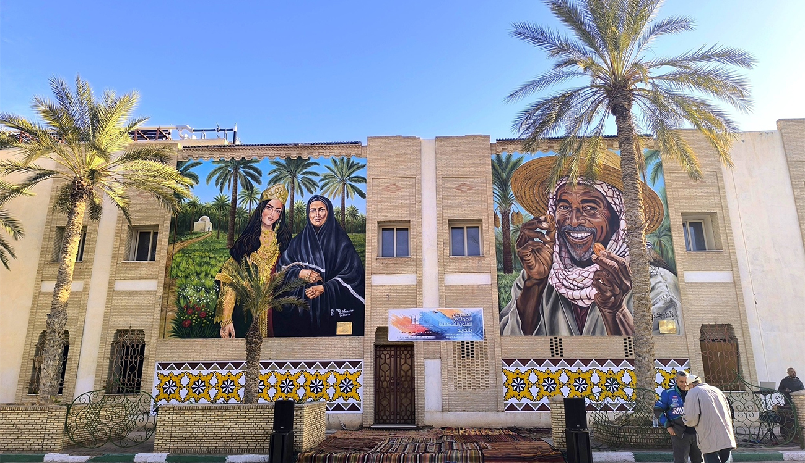
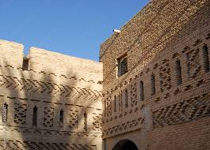

🏛️ Architecture traditionnelle de Tozeur
L’architecture de Tozeur est unique et adaptée au climat chaud et sec du désert. Les maisons sont construites avec des matériaux naturels comme la terre, l’argile et les briques ocre.


🧱 La brique de Tozeur
La brique de Tozeur est un élément essentiel de l’architecture traditionnelle. Elle est fabriquée à partir de terre locale et d’argile.
Ces briques permettent de garder les maisons fraîches en été et chaudes en hiver. Elles représentent aujourd’hui un symbole important du patrimoine architectural du sud tunisien 🌴.
Caractéristiques de l’architecture
- Briques ocre traditionnelles
- Rues étroites et ombragées
- Décorations géométriques
- Matériaux naturels
Matériaux utilisés
| Matériau | Utilisation |
|---|---|
| Argile | Construction des briques |
| Terre | Murs traditionnels |
| Brique ocre | Façades décoratives |
“L’architecture est le miroir de la culture.”